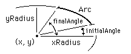

drawfillarc (x, y, xRadius, yRadius : int,initialAngle, finalAngle, Color : int)
The drawfillarc procedure is used to draw a filled arc whose center is at (x, y). It then fills in the pie-shaped wedge using the specified Color. To outline a filled arc, use drawfillarc with the Color parameter set to the fill color and then drawarc with the Color parameter set to the border color. For initialAngle and finalAngle, which determine the edges of the wedge, zero degrees is "three o'clock" and 90 degrees is "twelve o'clock", etc. The horizontal and vertical distances from the center to the arc are given by xRadius and yRadius.

This program draws a filled semicircle (actually, an approximation to a semicircle) whose center is (midx,0), the bottom center of the screen, using color number 1. The maxx and maxy functions are used to determine the maximum x and y values on the screen.
setscreen ("graphics")
const midx := maxx div 2
drawfillarc (midx, 0, maxy, maxy, 0, 180, 1)
On the PC, drawfillarc fills the pie-shaped wedge by using a "flood" fill and is thus subject to all the conditions of a flood fill. The meaning of the Color number depends on the current palette. See the palette statement. The screen should be in a "graphics" mode. See the setscreen procedure for details. If the screen is not in a "graphics" mode, it will automatically be set to "graphics" mode.
setscreen.html, maxx.html, maxy.html and the various draw… procedures.